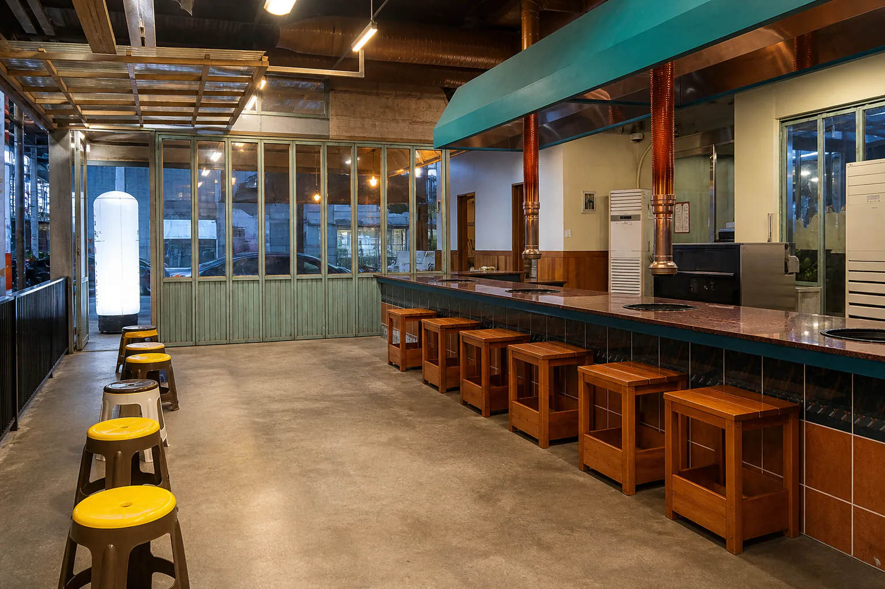

업체를 찾기 전에 공사의 목적과 범위를 먼저 정합니다.
신규 오픈인지 리뉴얼인지, 설계와 시공을 함께 맡길지, 간판·가구·주방 설비까지 포함할지를 한 장으로 정리하면 비교가 쉬워집니다.
업체마다 다른 조건으로 상담하면 가장 저렴해 보이는 견적이 실제로는 가장 많은 항목을 제외한 견적일 수 있습니다. 희망 오픈일, 예산 범위, 운영 인원, 필요한 좌석이나 업무 공간, 반드시 유지할 기존 시설을 동일하게 전달하세요.
현장 미팅 전에 확인할 6가지
공사 가능 시간, 엘리베이터·주차 사용, 소음과 폐기물 반출 조건
철거 범위, 재사용할 마감·설비, 원상복구 의무
필요 용량과 증설 여부, 장비 위치와 배관 가능 경로
덕트 경로, 배기 위치, 소방 설비 변경과 별도 공사 여부
입장부터 주문·이용·퇴장까지, 직원 이동과 수납 위치
건물 기준, 가시 거리, 허용 크기와 별도 허가 여부
상가 인테리어 견적은 같은 항목으로 비교해야 합니다.
총액만 보지 말고 공종별 수량과 단가, 자재 사양, 부가세, 설계비·현장관리비 포함 여부를 확인합니다. 전기 증설, 냉난방, 소방, 가스, 주방 장비, 간판처럼 별도 발주되는 항목과 공사 중 추가 비용이 생기는 조건도 계약 전에 구분해야 합니다.
공사 기간, 중간 검수 시점, 변경 요청의 승인 방식, 하자 보수 범위와 기간까지 문서로 남겨야 실제 비용과 일정의 차이를 줄일 수 있습니다.
업종이 달라도 좋은 공간은 운영과 브랜드를 함께 봅니다.
아래는 위코컴퍼니가 진행한 상업공간 프로젝트 이미지입니다. 사진의 분위기보다 각 업종의 운영 조건과 고객에게 남길 인상을 어떻게 연결했는지 확인하세요.



자주 묻는 질문
상가 인테리어 견적은 몇 곳에서 받아야 하나요?
숫자보다 동일한 현장 정보와 공사 범위를 전달하는 것이 중요합니다. 조건이 다르면 총액을 직접 비교하기 어렵습니다.
설계와 시공을 따로 맡겨도 되나요?
가능합니다. 다만 도면·자재 사양·현장 변경의 책임과 전달 방식을 계약 전에 정해야 합니다.
브랜딩도 인테리어와 함께 진행할 수 있나요?
가능합니다. 브랜드의 고객, 메뉴나 서비스, 가격대와 핵심 메시지를 먼저 정하면 간판·공간·콘텐츠가 한 방향으로 연결됩니다.